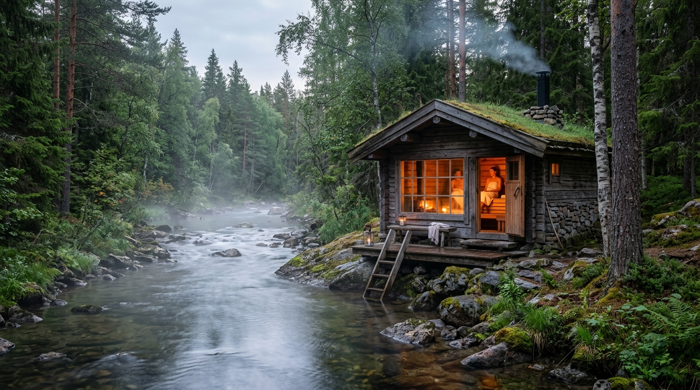
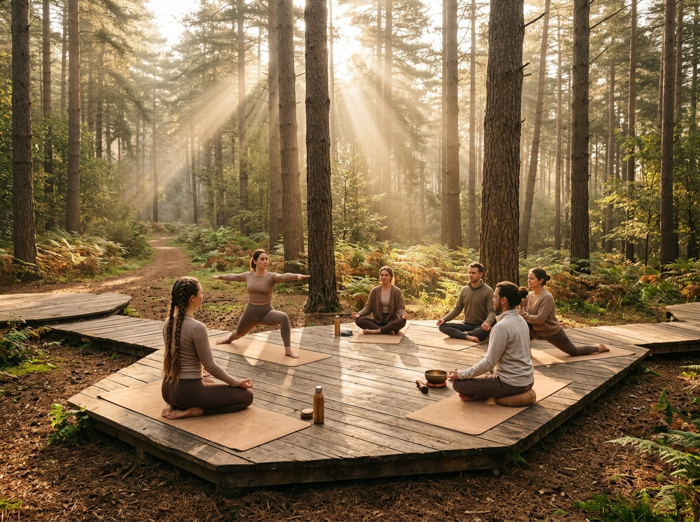
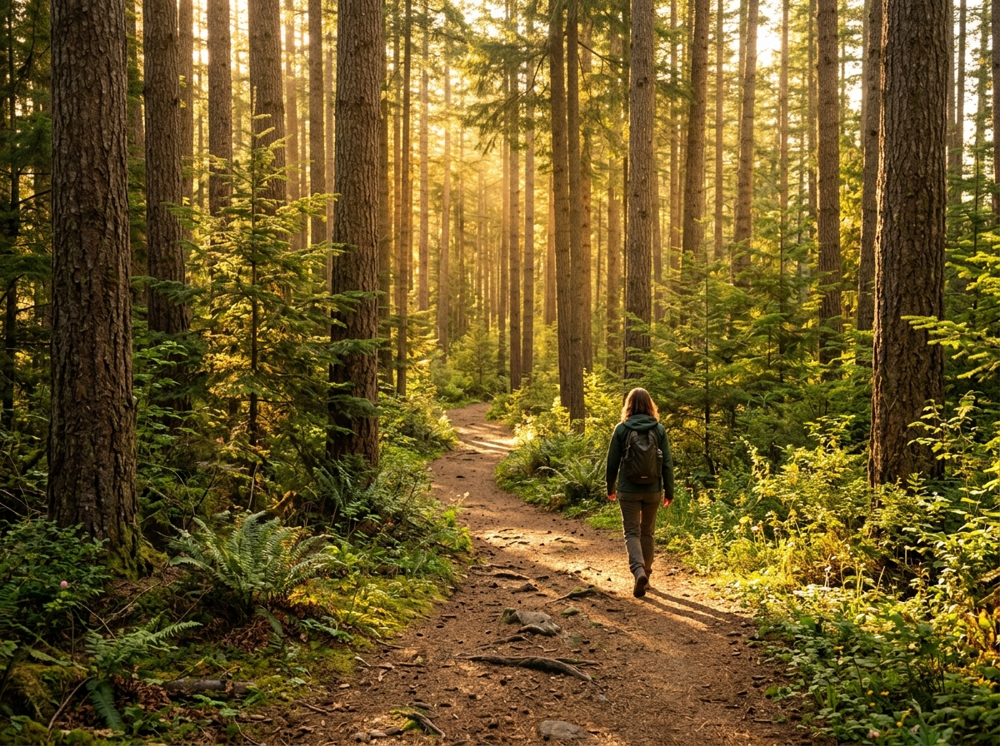
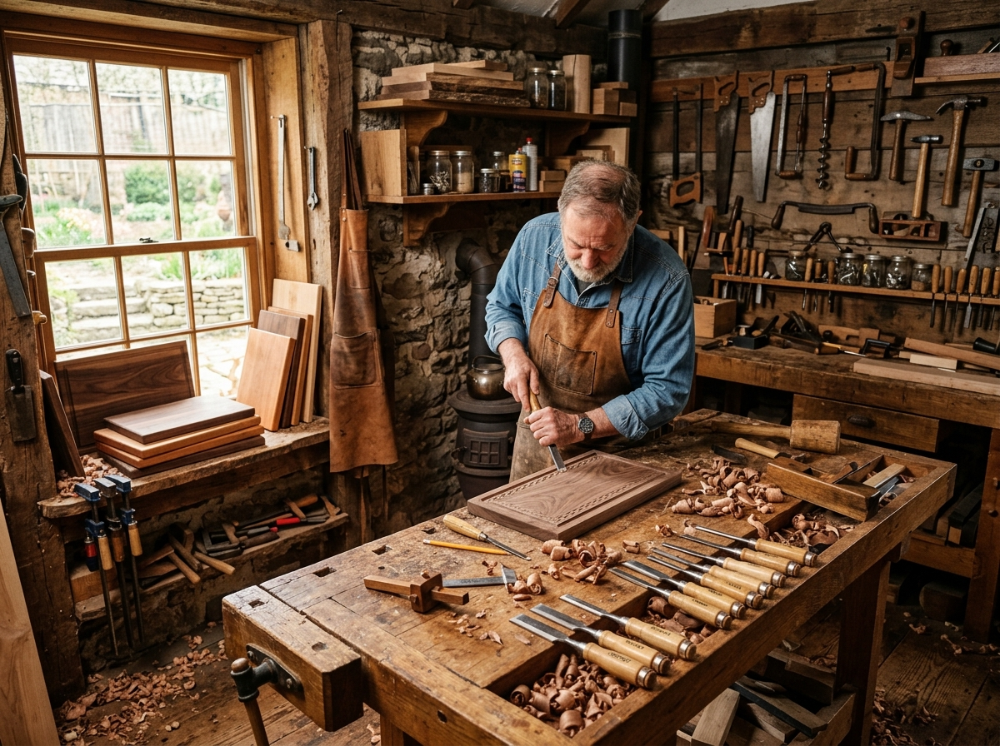

Filary Doświadczeń
Co robimy podczas turnusu?
Wszystkie atrakcje są zaplanowane płynnie w kameralnej grupie do 8 osób.

ŻywiołySauna & Zimna Rzeka
Sesje saunowe połączone z zanurzeniem w zimnej leśnej rzece tuż obok. Potężny reset układu nerwowego i odporności.
- Rytuał saunowy z naturalnymi olejkami
- Zimna kąpiel regeneracyjna w rzece
- Kameralna atmosfera (grupa max 8 osób)

Ruch & CiałoJoga Somatyczna
Poranne i wieczorne praktyki ukierunkowane na głęboką relaksację mięśni i uelastycznienie kręgosłupa.
- Poranne wybudzenie i rozciąganie
- Zajęcia w jaśniejącej sali na miejscu
- Kameralna praktyka dopasowana do każdego

WyciszenieMedytacja & Silent Walk
Trening uważności i uziemienia pozwalający wyciszyć natłok myśli i odzyskać spokój ducha.
- Medytacje z uważnym oddechem
- Leśny spacer uważności (Silent Walk)
- Zanurzenie w leśnej ciszy Gór Sowich

RzemiosłoWarsztaty Stolarskie
Ręczna obróbka dębowego drewna pod wiatą. Uczysz się szlifowania, fakturowania i olejowania.
- Nauka pracy z naturalnym drewnem
- Własnoręcznie wykończona dębowa deska
- Twórczy relaks w ogrodzie
 Wyżywienie
Wyżywienie
Kuchnia Gospodarska
Zdrowe, domowe posiłki przygotowywane z lokalnych wiejskich produktów z wyczuciem tradycji.
- Sycące śniadania z pieczywem i serami
- Ciepłe autorskie obiadokolacje
- Niedzielny poczęstunek pożegnalny
 Zielarstwo & Natura
Zielarstwo & Natura
Autorskie Napary Ziołowe
Aromatyczne napary ze świeżo zbieranych słowiańskich ziół przygotowywane według tradycyjnych receptur.
- Autorskie mieszanki ziołowe
- Regenerujące infuzje do picia
- Wieczorna herbata w ogrodzie